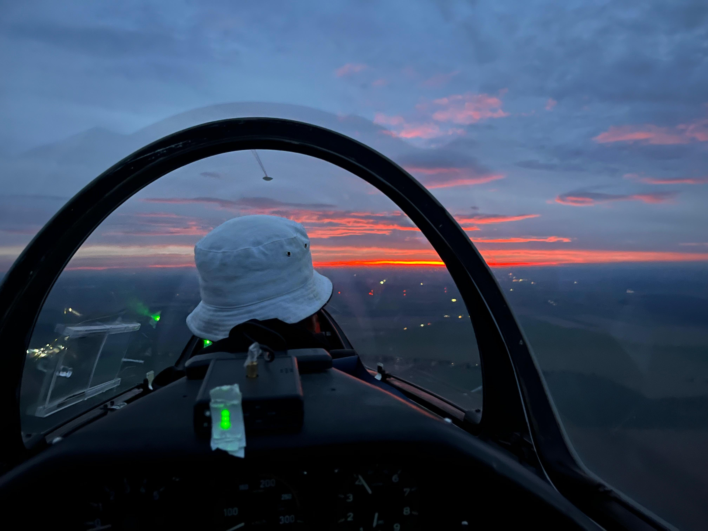

Welle auf dem Fläming
Zum Ostermontag entpuppte sich ein anfangs normalster lokaler Segelflug zu einem unglaublichem Erlebnis. Wir kamen über die Wolken.
Doch, wie klappt das? Normalerweise ist dies im Flachland nicht möglich, da man eigentlich einen Berg als Auslöser der Welle braucht. Dieser Hang löst unter besonderen Atmosphäreneigenschaften in seinem Lee Schwingungen in der Atmosphäre aus, in denen man weit über den eigentlichen Hang steigen kann, teilweise bis 7000m oder höher. Anders als für Thermik braucht man dafür eigentlich eine ziemlich stabile Luftmasse, Thermik stört das ganze Konstrukt in der Regel.
Gut, wir haben aber jetzt kein Berg im Flachland, doch wie geht das dann? Genau kann ich das auch nicht erklären, aber es kommt sehr sehr selten zu Scherungswellen, wo Windscherungen dieses Phänomen auslösen.
Wie sind wir da jetzt hingekommen? Der Flug fing als ganz gewöhnlicher Thermikflug an, bis wir auf einmal mitten im blauen Steigen hatten und einkreisten. Dieses Steigen brachte uns über die Wolkenuntergrenze, die zu dem Zeitpunkt auf ca. 1700m war. Anschließend konnte man im Luv naheliegender Wolken (später erkannt als Rotorwolken) weiter über die Wolken steigen, bis ca. 2200m, wo die Wolkenobergrenze ungefähr war.

Wir erkannten, dass die Wolken ganz anders aussahen, als die normalen Cumuluswolken, sie waren viel zerrissener, flusiger und drehten sich viel mehr. Mit der Vermutung, dass dies Rotorwolken sein könnten, arbeiteten wir uns über diese weiter ins Luv vom Rotor, weil dort dann theoretisch irgendwann die Welle stehen könnte, wenn es eine gäbe. Im Luv gab es ein kleineres blaues Loch (also einen Bereich ohne Wolken). Ok - Theorie könnte stimmen. Wir flogen also weiter ins Blaue in super ruhiger Luft. Irgendwann bemerkten wir, dass das Vario Steigen zeigte, ca. 0,5m/s. Nicht viel, aber laminares Steigen. Ab 2400m, also 200m über Wolkenobergrenze entwickelte sich die Welle dann richtig gut, teilweise 2-3m/s Steigen. Bei 2900m zogen wir die Bremsklappen, da wir Sicherheitsabstand zum Luftraum, der ab ca. 3000m beginnt, halten wollten und versuchten uns eine Freigabe für weiteres Steigen in Luftraum Charly zu erfragen. Ohne Tranponder bekamen wir die vorhersehbarerweise aber leider nicht, sodass wir uns dazu entschieden, nach kurzem Genießen der Aussicht, wieder zurück zum Platz zu fliegen. So hoch zu sein ist zwar unbeschreiblich schön, allerdings auch sehr kalt, vor allem, wenn man, weil man sowas ja nicht geplant hat, nur mit Pulli im Flugzeug bei -15 Grad Außentemperatur sitzt.
Der Rückweg war dann ziemlich witzig. Mit schätzungsweise 50-60km/h Gegenwind in der Höhe kamen wir ziemlich schlecht voran. Wir brauchten Gleitzahl 11, um zum Platz zu kommen. Normalerweise selbst in dem Schulungsdoppelsitzer kein Problem, wir glitten allerdings mit Gleitzahl 9. Als wir dann bereits wieder unter den Wolken waren, wir inzwischen Gleitzahl 15 benötigten und die Wolkenstraßen nicht funktionierten, stellten wir fest, dass der Anhänger mit unserer anderen Ask-21 gerade noch unterwegs ist und somit eine Außenlandung ein größeres organisatorisches Problem darstellen würde.
Wir fanden dann aber nochmal Thermik und konnten die erforderliche Höhe erkurbeln und glücklich, aber ein bisschen eingefroren, am Platz landen.
Insgesamt ein atemberaubendes Erlebnis, was wir so schnell vermutlich nicht mehr erleben werden. Es ist immer wieder aufs neue erstaunlich, wie vielseitig Segelfliegen ist.